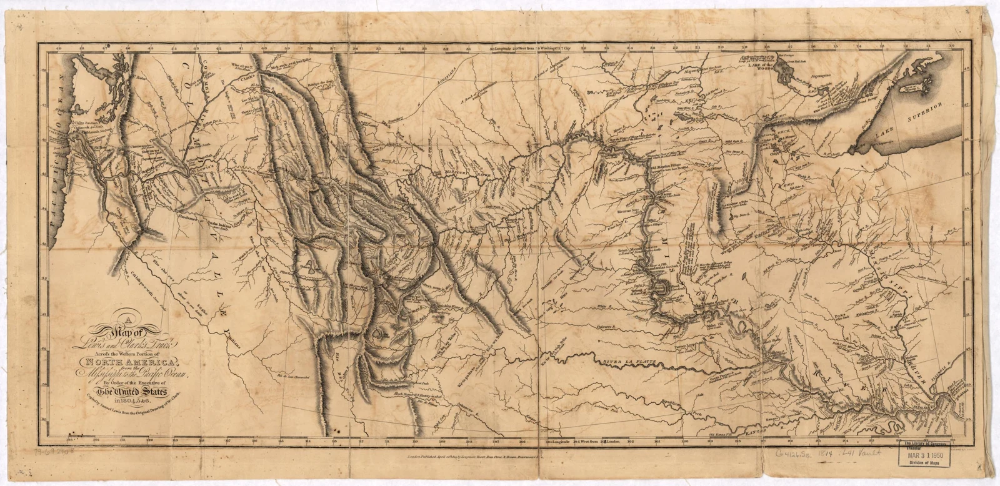
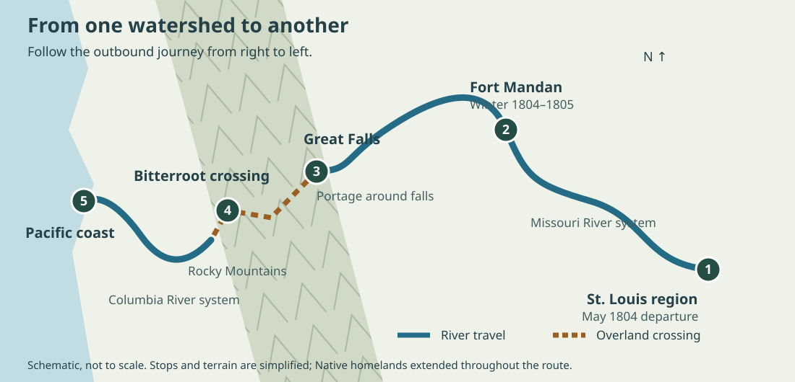
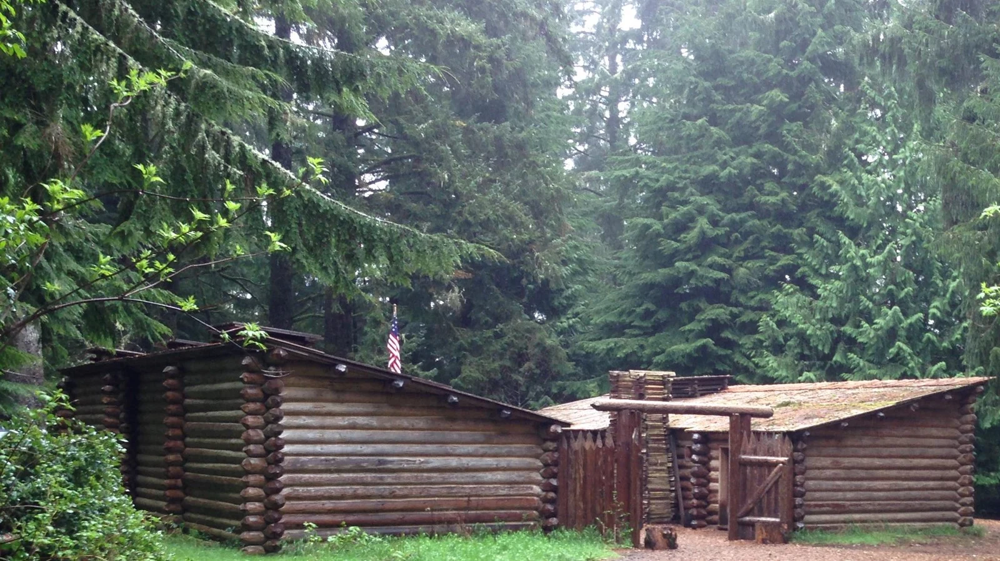
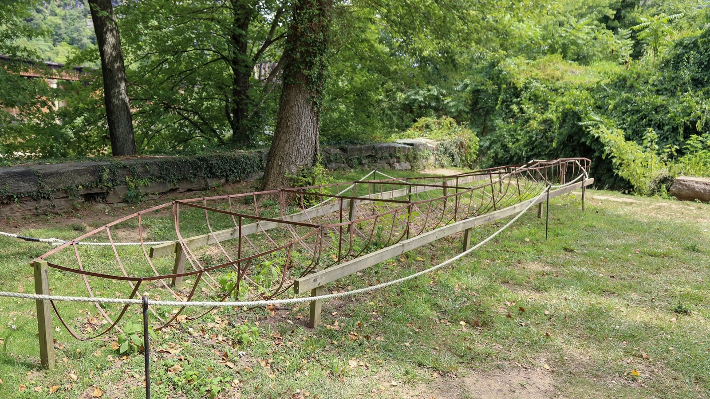

How do you cross a continent when your maps are incomplete? You measure, observe, build, ask for help—and revise what you think you know.
Big idea: The expedition combined scientific instruments with Indigenous expertise. Its records expanded U.S. knowledge, while its mission also advanced a growing nation’s claims to inhabited lands.
45–60 minutes · Predict → investigate → explain

Historical map · Published 1814
From field observations to a published map: this 1814 engraving turns a journey into information that other people could read, compare, and use. Enlarge it to inspect rivers, mountain markings, and place names.
Samuel Lewis after William Clark; Neele & Son. Library of Congress, Geography and Map Division. · Public domain · Source and rights
01 / Before the departure
What must we know first?
A purchase and a mission
In 1803 the United States purchased France’s claim to the Louisiana Territory. President Thomas Jefferson had already been planning a western expedition. He wanted a practical trade route toward the Pacific, geographic information, and observations of plants, animals, and Native nations. Meriwether Lewis invited William Clark to share leadership of the Corps of Discovery.
The purchase did not mean Native nations agreed to surrender their homelands. The Pacific Northwest was also beyond the Louisiana Purchase.
Known to whom?
These were not empty or unknown lands. Native nations had communities, trade networks, place names, and detailed knowledge of routes and seasonal resources. The expedition’s maps were incomplete from its own perspective. Earlier Indigenous, European, and other travelers had already gathered geographic knowledge.
A river route looked promising on paper. The Rocky Mountains and the divide between river systems made a continuous navigable water passage impossible along their route.
Lewis prepared for scientific observation; Clark made maps and managed much of the travel. Soldiers, interpreters, hunters, and craftspeople kept the expedition operating. Journals preserve many observations, but reflect the writers’ perspectives and biases.
Sacagawea
A Lemhi Shoshone woman, Sacagawea contributed language skills, recognition of familiar landmarks, and knowledge of useful plants. Her work helped negotiations for Shoshone horses. She traveled with her infant son, Jean Baptiste. Describing her as the guide for the whole route oversimplifies her role.
Mandan and Hidatsa communities were important during the first winter. Shoshone assistance and horses helped the mountain crossing; Nez Perce people provided food and practical help. Along the Columbia and coast, the Corps relied on local trade and knowledge. Assistance involved choices and negotiations, not automatic agreement with U.S. ambitions.
York
York, enslaved by Clark, performed essential labor and participated in the journey. His contributions did not give him the same freedom or rewards as white expedition members. Ask whose work is visible in a record and who controlled the writing.
York’s presence is central to Charles M. Russell’s York (1908). Painted more than a century after the expedition, it reflects a later artist’s imagined scene—not an eyewitness image or a verified portrait. What does the composition emphasize, and what cannot it tell us about York’s own experience?
Charles M. Russell, 1908; image supplied by National Park Service. · Public domain · Source and rights
02 / Follow the changing problem
One journey, several kinds of travel

The Missouri and Columbia belong to different drainage systems. Reaching the Pacific required switching from boats to overland travel and back to boats. ClassroomOS original schematic; not a navigation map.

Photograph · Modern reconstruction
The Fort Clatsop replica makes the winter shelter’s layout visible: log walls, covered rooms, and an enclosed working space. This is a modern reconstruction, not the surviving original fort. What design choices might help a group shelter through a wet coastal winter?
National Park Service photograph. · Public domain · Source and rights
Descriptions of anatomy, habitat, weather, and plant growth made observations useful to readers far away. Specimens and repeated measurements let others examine claims. Species could be new to U.S. science while already familiar to Indigenous people.
Technology · Extend the senses
Compasses measured direction; sextants and octants measured angles to celestial objects. Timekeeping and astronomical tables helped interpret observations. Instruments required skill, calibration, and clear skies; carrying one did not guarantee accurate coordinates.
Engineering · Work within constraints
Boats, repairs, shelters, and portage equipment had to work with available materials. Lewis’s portable iron-frame boat floated initially but leaked when its substitute seam seal failed. The Corps abandoned it and built additional dugout canoes. Buoyancy and waterproofing are different requirements.
Maps, sketches, and descriptive writing translated experience into a record. Choosing scale, symbols, labels, and detail affects what a reader sees. A well-drawn specimen can communicate structure; an attractive drawing alone cannot establish identification.
Mathematics · Turn observations into position
Angles, distances, estimates of travel, and astronomical calculations supported mapping. Latitude is north–south position; longitude is east–west position. Longitude was harder to establish reliably with the expedition’s methods. Estimates and errors could accumulate between position fixes.
Navigation lab: from sunlight to latitude
Predict: At the equinox in the northern hemisphere, does a lower noon Sun suggest a more northern or southern location?
A sextant measures an angle. On land, a reflecting artificial horizon can replace a horizon hidden by hills. The angle between the Sun and its reflection is twice the Sun’s altitude, so halve that reading first.
Explain: At the equinox, latitude ≈ 90° − noon solar altitude for these northern locations. At other seasons, include the Sun’s declination. This teaching model omits refraction and instrument corrections; it is not an expedition coordinate reconstruction. Never look at the Sun through an unfiltered instrument.
The boat required several materials to work together: a transportable iron frame, a hide covering, and watertight seams. Keith Rocco’s reconstruction helps us visualize assembly. The field test exposed a sealing failure despite the boat’s initial ability to float.
Keith Rocco; NPS / Harpers Ferry Center commissioned artwork. · Public domain · Source and rights

Photograph · Iron boat replica
This replica exposes the supporting frame that would sit beneath the hide covering. Compare it with the painting: the frame provides shape, but the skin and sealed joints must keep water out. The structure alone is not a finished boat.
Engineering decision: what did the boat test prove?
The iron boat floats on launch, then water enters through the seams. Choose the conclusion supported by the test.
04 / A strange connection across two centuries
Mercury laxatives: medicine becomes archaeological evidence
Benjamin Rush advised Lewis on medicine and supplied about 600 “bilious pills,” often called “Rush’s Thunderbolts.” They included calomel, mercury(I) chloride (Hg₂Cl₂), and the plant-derived purgative jalap. The captains used them for many complaints. A laxative stimulates bowel movements; a purgative produces a stronger clearing of the bowels.
The historical idea
Influential medical theories connected illness to bodily imbalance or substances that needed removal. Purging and bloodletting fitted that reasoning. A dramatic bodily response could look like proof of treatment. But causing diarrhea does not establish that a medicine treats the underlying disease.
The chemistry
Calomel is a mercury compound, not a spoonful of liquid elemental mercury. Chemical form affects how a substance behaves, but mercury-containing medicines can still cause harm. Modern toxicology recognizes mercury hazards, including damage to the nervous system and kidneys. This is historical analysis, not a treatment to recreate.
Some mercury leaves the body in excreted material.
3 · Soil
A latrine can retain a chemical trace.
4 · Interpretation
Archaeologists compare chemistry, features, artifacts, and written records.
At Travelers’ Rest in present-day Montana, archaeological work in 2002 identified a mercury-contaminated trench latrine along with hearths and lead associated with firearm work. This evidence supports the site’s connection to the expedition. Mercury alone is not a unique fingerprint: other historical activities could leave it too.
Calomel contains mercury atoms chemically bonded in a compound. A soil analysis detects a chemical trace; it does not recover an intact pill or automatically identify who used it. Context and independent clues connect that trace to a historical claim.
ClassroomOS original illustration · Schematic, not a molecular geometry or excavation plan.
Evidence lab: build a supported claim
These are invented classroom datasets, not measurements from Travelers’ Rest. Predict which site makes the stronger case, then inspect the evidence.
What additional evidence would change your confidence? Explain why a contaminated sample is evidence, but not a complete explanation.
05 / Make your case
Keep a field notebook, then question it
Choose a safe outdoor location or an ordinary classroom object. Sketch it, add scale or a measured dimension, record date and conditions, and separate observation (“three pointed leaves”) from interpretation (“this may be a maple”). Identify one uncertainty and one way to check it. Do not collect unknown plants or chemicals.
Core challenge
Explain how two STEAM practices helped solve different expedition problems. Use one example involving an instrument and one involving local expertise.
Stretch challenge
A field journal says a person improved after taking a pill. Give two reasons this does not prove the pill caused recovery. Then explain what additional evidence could support a treatment claim.
History and consequences
The expedition returned to the St. Louis region in September 1806. Its records helped U.S. mapping and scientific study, and helped advance expansion. Later settlement and federal policy brought dispossession and disruption to Native nations. What is lost when a journey is told only as a story of two heroes?
Teacher discussion notes and exit-ticket answers
Lower noon altitude gives greater northern latitude in the equinox model. The boat test identifies a sealing problem, not an impossibility of buoyancy. Site B offers converging evidence, but still requires dating, sample controls, and alternative explanations. Treatment followed by recovery is correlation: natural recovery, another intervention, or incomplete reporting may explain it. Students should credit Native knowledge as expertise and distinguish U.S. territorial claims from Native consent.
Suggested pacing: foundations 10 minutes; journey and toolkit 10; navigation and engineering 10; mercury/evidence lab 10; notebook and discussion 10. For younger learners, emphasize sequence and evidence; for older learners, investigate uncertainty, source bias, and competing explanations.
Compare a journal entry with a modern interpretation. Who wrote it, for whom, and what could that writer know? Consult Native nations’ own histories when examining encounters and their consequences.